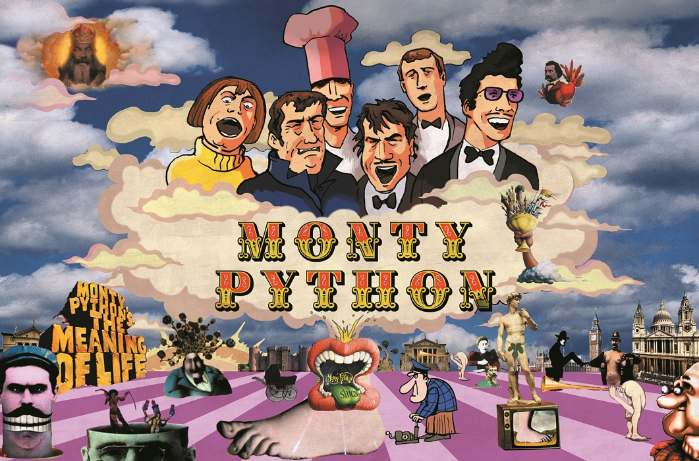
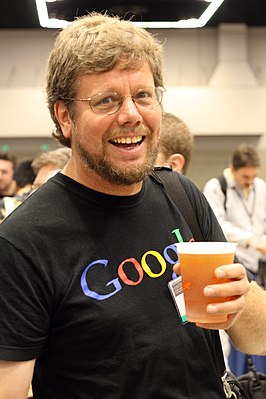

Python
Главная страница
Функция вывода данных
Переменные
Функции ввода данных
Условные операторы
Циклы
Об языке программирования Python
Язык программирования Python – это высокоуровневый язык программирования, который имеет огромную популярность и насчитывает около 11ти млн пользователей практически по всему миру. Этот язык, кстати, используется также в таких компаниях, как: Google, Instagram, Netflix и другие. Термин „высокоуровневый“ был использован не зря. Высокоуровневый язык программирования — тот язык, который максимально прост, быстр и удобен в использовании. Если углубляться, то основным преимуществом будет удобство при портировании различных программ на различные операционные системы. Для чего, собственно, используется язык программирования Python? Используется он в разработке игр(Battlefield, Vampire: The Masquerade bloodlines и др.), веб-разработке, разработке программ и т.д
Почему же такое название - 'Python'? Все довольно просто: создатель языка программирования Python, а именно Гвидо ван Россум очень любил телешоу "Летающий цирк Монти Пайтона", из-за чего и появилось такое название, созвучное, скорее, не с сериалом, а со змеями.

А это, собственно, сам Гвидо:

Собственно задумка самого языка появилась в конце 1980 года, а разработка началась в 1989 году и закончилась в 1991. Используется этот язык в анализе данных, машинном обучении, DevOps и веб-разработке, а также в других сферах, включая разработку игр. Язык Python работает практически на всех известных платформах: от карманных компьютеров и смартфонов, до серверов сети. На этом ознакомление с Python можно завершить.